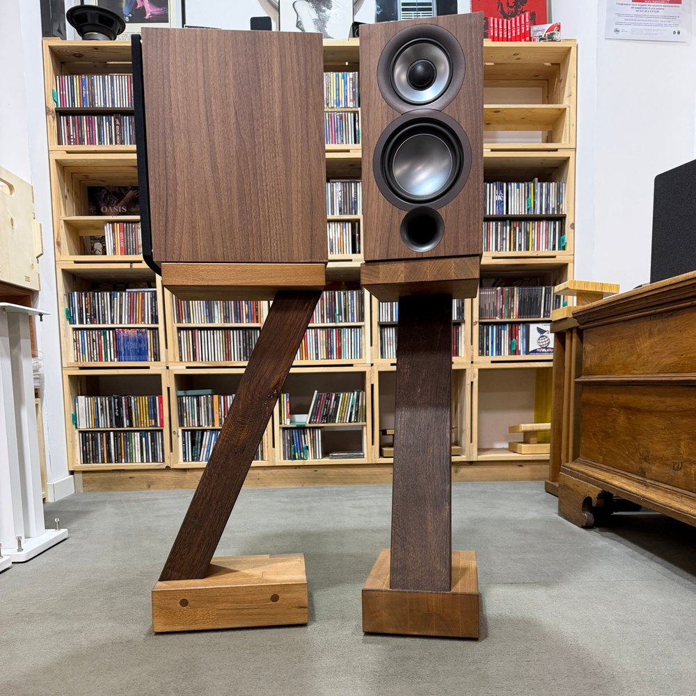
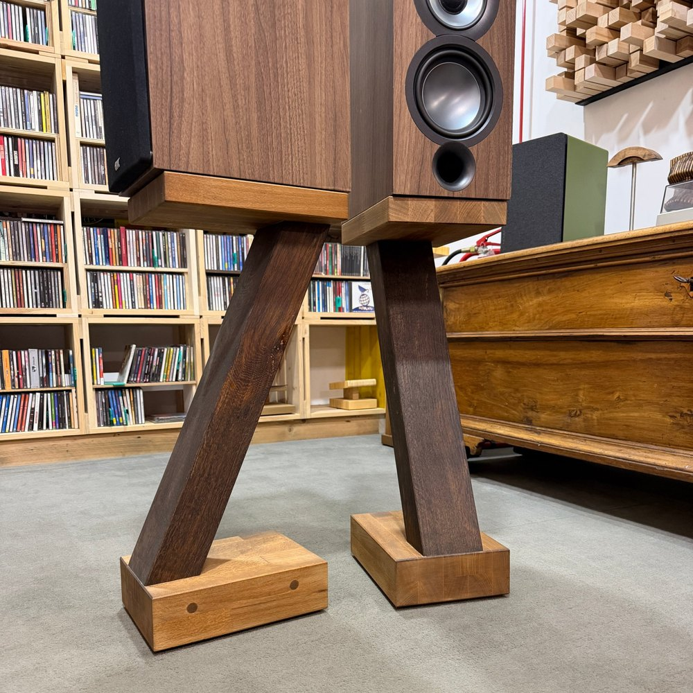
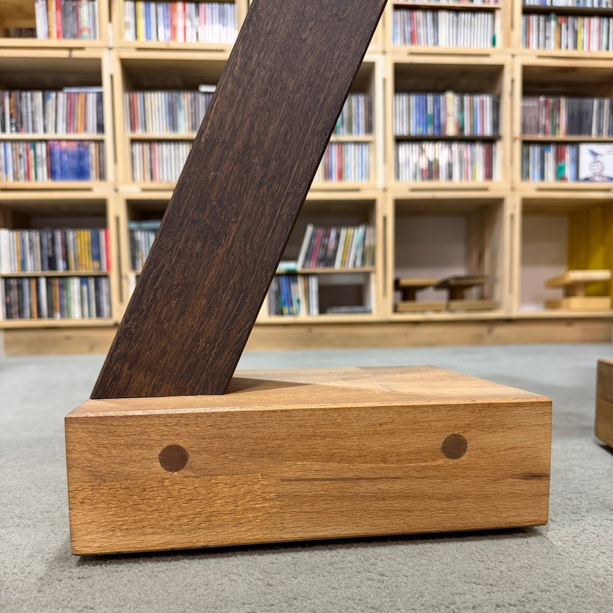

Extrasound Zeta Speaker stands with a tilted leg, handmade
A 61 cm stand with a single tilted leg in dark Oak, between a Beech top and base: seen from the side it draws a Z.
- Oak and Beech
- 61 cm tall
- Top 18.7 × 24.8 cm
Woods on requestSee the woods
- Beech
- Oak
- American walnut
- Cherry
- Ash
- Doussié
- Wenge
Price on request


A single leg, tilted.
The Zeta has a single solid leg that rises at an angle from the base to the top. From the side it forms a Z; from the front it is a narrow column that leaves the whole scene to the speaker.
The leg is in dark-stained Oak, the top and base in warmer-coloured Beech: the contrast brings out the design. On the side of the base the wooden dowels remain visible.
The top measures 18.7 × 24.8 cm and is also the stand's whole footprint. At 61 cm tall, a bookshelf speaker puts its tweeter around 80-85 cm from the floor, the right height for a sofa or armchair of normal height. For your own height there is the calculator.
You'll find it in our showroom in Cesena. Fabrizio also builds it new, to the size of your equipment and your home.
Speakers that fit, for example: Dynaudio Evoke 10, Indiana Line Tesi 3 and ELAC UniFi UB52. These are just examples from the range at Extrasound: any bookshelf speaker with a similar footprint will do.
Frequently asked questions.
What seating height does it suit?
At 61 cm tall the Zeta suits a sofa or armchair of normal height: the tweeter of a bookshelf speaker ends up around 80-85 cm from the floor. For your own setup there is the height calculator.
Will my speaker fit?
The top measures 18.7 × 24.8 cm and is designed for narrow, deep bookshelf speakers; the speaker can also overhang by 2-3 cm. Above you will find a few examples.
Can it be made in other woods or to measure?
Yes: I can change the height, the size of the top or the woods, for example a lighter or darker leg. See how made to measure.